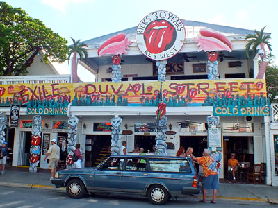
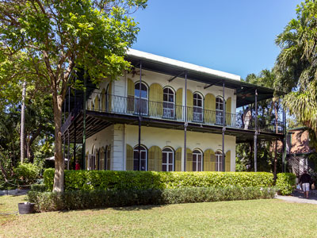
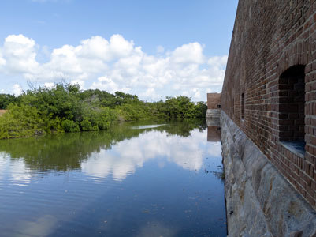
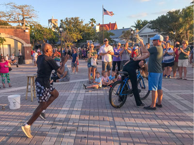
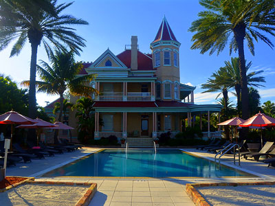
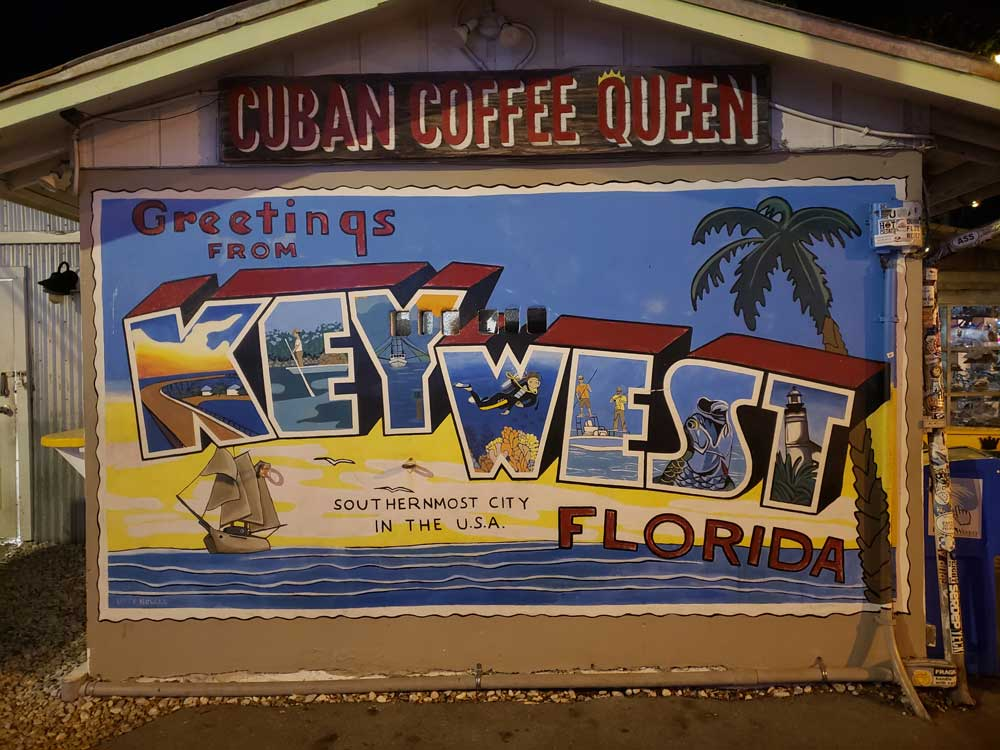
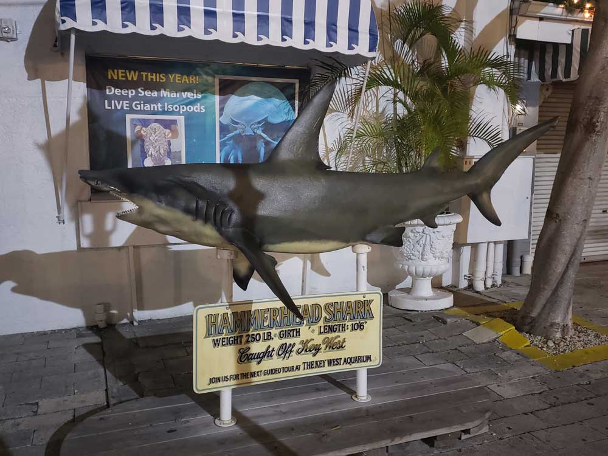
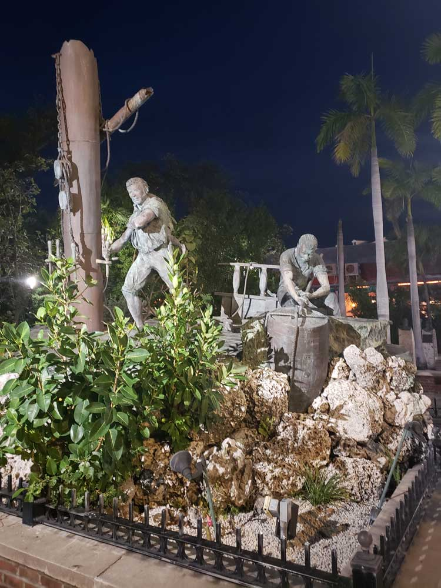
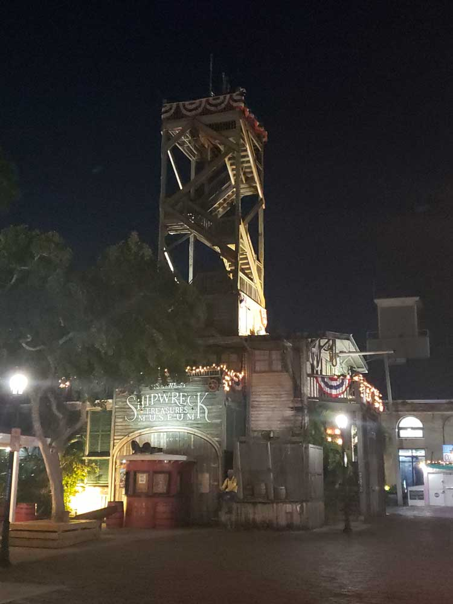
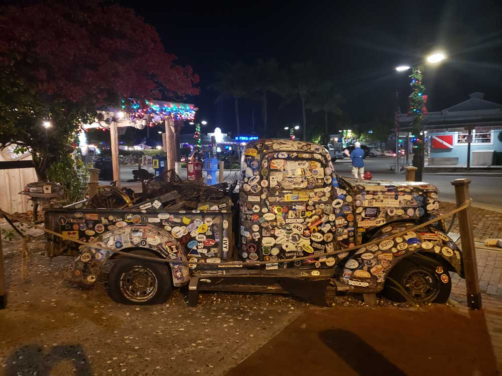

Key West Travel Guide
Island in the Straits of Florida with the Key West Historic District including the major tourist destinations of Mallory Square, Duval Street, the Truman Annex and Fort Zachary Taylor
Places to See in Key West

Cayobo, CC BY 2.0, via Wikimedia Commons; Image Size Adjusted

Duval Street
Downtown street in Key West, Florida, with mix of early Key West Victorian mansions, bungalows, art galleries, boutiques, inns and bodegas line the wide sidewalks

Acroterion, CC BY-SA 3.0, via Wikimedia Commons; Image Size Adjusted

Ernest Hemingway House
Residence of American writer Ernest Hemingway in the 1930s

RuggyBearLA, CC BY 2.0, via Wikimedia Commons; Image Size Adjusted

Fort Zachary Taylor Historic State Park
Florida State Park and National Historic Landmark centered on a Civil War-era fort located near the southern tip of Key West
Key West Lighthouse
Historic lighthouse and keeper's quarters museum featuring panoramic island views, maritime exhibits, and artifacts that interpret Key West's seafaring heritage.

runarut, CC BY 2.0, via Wikimedia Commons; Image Size Adjusted

Mallory Square
Plaza located on the waterfront in Key West's historic Old Town, adjacent to the cruise ship port, and location of the "Sunset Celebration" involving hundreds of tourists who arrive each night to view the sunset

Pallowick, CC BY-SA 4.0, via Wikimedia Commons; Image Size Adjusted

Southernmost House
Historic mansion in Key West located in the Upper Duval district and has been converted into a bed and breakfast

Radomianin, CC BY-SA 4.0, via Wikimedia Commons; Image Size Adjusted

Southernmost Point of the Continental USA
Anchored concrete buoy in Key West, marking the southernmost point in the continental United States
Tropic Cinema
Independent nonprofit cinema featuring first-run films, documentaries, international productions, special screenings, and cultural events in a restored art deco theater setting.
Truman Little White House
Historic museum residence preserving the winter retreat of President Harry S. Truman through restored rooms, exhibits, and artifacts that illuminate twentieth-century American history.
Overview
Key West is a small island city at the end of the Florida Keys, the southernmost point in the continental United States, only 90 miles from Cuba. It is known for its laid-back, anything-goes atmosphere, its Caribbean-style architecture, its sunsets, and the creative spirit that drew writers such as Ernest Hemingway and Tennessee Williams. The city's nickname, the Conch Republic, comes from a 1982 mock secession that has become part of its identity.
Visitors come to Key West to walk Duval Street, to watch the sunset celebration at Mallory Square, and to see the Ernest Hemingway Home, the Harry S. Truman Little White House, and the Southernmost Point Buoy. They also come for snorkeling, diving, and fishing on the reef, for fresh seafood and Key lime pie, and for day trips to Dry Tortugas National Park.
History
The Spanish called the island Cayo Hueso, or "Bone Key," after the human bones they found on its shores, and it was home to the Calusa and Tequesta peoples. The island was settled by Americans in the 1820s, and it became a major port for "wreckers" who salvaged cargo from ships that ran aground on the reef, making Key West one of the richest cities in the country per capita by the 1850s. Cigar making, sponge fishing, and the U.S. Navy kept it going, and Henry Flagler's railroad reached the island in 1912 but was destroyed by the 1935 Labor Day hurricane, after which the Overseas Highway was built. In 1982, residents declared the Conch Republic in protest of a federal roadblock.
Sightseeing and Popular Landmarks
Duval Street runs from the Gulf to the Atlantic with bars, shops, and restaurants, and Mallory Square hosts a nightly sunset celebration with street performers. The Southernmost Point Buoy is a painted concrete marker and one of the most photographed spots in Florida, and the Key West Lighthouse offers views from the top of its 88 steps. The Hemingway Home, with its famous six-toed cats, and the Southernmost House are historic landmarks, and the Tropic Cinema shows independent films.
Culture and Museums
The Harry S. Truman Little White House was the winter White House of President Truman and is now a museum, and the Hemingway Home has the author's furnishings and a collection of manuscripts and photographs. The Key West Museum of Art & History, the Mel Fisher Maritime Museum, with treasure from the Spanish galleon Atocha, and the Key West Shipwreck Museum cover the island's past. The city hosts events such as Fantasy Fest in October and the Hemingway Days festival in July.
Parks
Fort Zachary Taylor Historic State Park has a Civil War fort and the best beach in Key West, with good snorkeling off the shore. The Key West Butterfly and Nature Conservatory, Smathers Beach, and the Higgs Beach Park are other places to relax, and Dry Tortugas National Park, about 70 miles west, is reached by ferry or seaplane and has Fort Jefferson and clear-water snorkeling. The Florida Keys Overseas Highway and the Seven Mile Bridge are scenic drives to the island.
Seasons and Weather
Key West has a tropical climate. Summers are hot and humid, with highs in the 90s°F, and winters are warm and dry, with highs in the upper 70s°F, making December through April the peak season. Rain falls mostly in the summer and fall, and hurricane season runs from June to November.
This article uses material from Wikipedia as well as information from official tourism and institutional sources. Key references include Florida Keys & Key West Tourism, Ernest Hemingway Home & Museum, Harry S. Truman Little White House, Florida State Parks, National Park Service Dry Tortugas National Park, and National Weather Service Key West. Wikipedia material is from the article "Key West, Florida", and is available under the Creative Commons Attribution-Share-Alike License 3.0.




